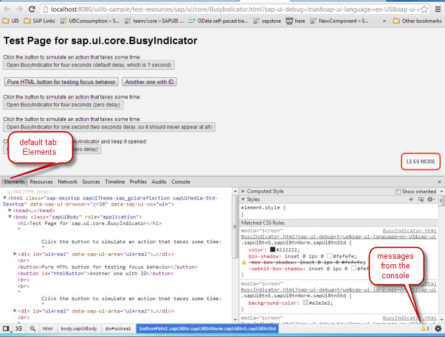

Browser debugging for ABAP developers - Wait, this is not my workbench!
The first thing you need to know when coming from ABAP development is probably that when debugging UI5, you do not debug from within your IDE.
So if you are using e.g. Eclipse, breakpoints you set within Eclipse will not stop your script when it is executed with in your browser (except for explicit "debugger;" statements in your code, that is), because the latter has no knowledge of your IDE and does not communicate directly with it.
Instead, you’ll have to use the debugging tool of the respective browser.
Every modern browser has such debugging capabilities.
For Firefox, you will have to install the "Firebug" extension first, which you can find here:
Download Firebug
For a more extensive tutorial on debugging in browser tools, we suggest also reading a basic tutorial like e.g.
JavaScript Debugging in Chrome
This article attempts to just give you a brief overview over the basic debugging functions available in both your ABAP debugger and most browser debugging tools.
ABAP debugger vs. Browser debugger
In this section, I will use the debugging tools of Chrome for comparison. Not for any particular reason, just because it is the browser I usually start developing with.
Note that you will have to test your application on all browsers officially supported by SAP, because unfortunately, the different vendors have implemented some things differently in their browsers. IE in any version is known to behave different from Firefox, Chrome and Safari in many ways.
Now let's have a look at some basic debugging features and try to locate them within the browser.
In most browsers you can simply start the debugger by hitting the F12 key or use the browser menu.
Assuming your application is up and running on your webserver, be it a local tomcat or some remote server, you will at first need to locate the lines of code you would like to inspect and set breakpoints at.
A freshly opened application in the Chrome debugger will look like this:

The tools will not immediately jump to the executed javascript code, but show you on the Default tab "Elements" the tree of the HTML elements present in the DOM.
To see the javascript code within application and to set a breakpoint there, you'll need to switch to the "Sources" tab.
From there, you can open any of the included source file. Most probably you'll have to click to open the sources tree (see screenshot below) when you start the tools for the first time.

Assuming you would like to set a breakpoint within the html page, you would have to open it from the sources tree to see the actual content. Once you have done so, you get to a view that at least resembles what you usually see in the ABAP debugger:
You probably know this view that comes up when you execute and debug an application from the workbench:

And this is what you get in Chrome:
 .
.
The callstack is only visible here when the code execution is on hold.
NOTE: There is no forward navigation within javascript here. You cannot doubleclick on any method and jump right into it. You'll either have to jump into it while it is being executed or you need to open the file containing the method and look for it, there.
HINT: If you are not sure which file exactly a piece of code is located, Firefox offers you to search through several files included in your page at once. This option is unfortunately missing in Chrome.
Setting breakpoints
There are several ways to set breakpoints in your browser debugger. One method that it has in common with the ABAP debugger is to just left-click once on the line number where you would like to break.
Clicking again will remove the breakpoint, while a right click on an existing breakpoint will allow you to temporarily disable it or also edit it.
If you right-click on a line where no breakpoint exists, yet, you can also insert a conditional breakpoint.
Another option is to set breakpoints on certain events, or event listeners, in the right half of the debugging tools. I am not going into further details on this, here - if you're interested, just go ahead and read e.g. the Google tutorial mentioned above, where all of this is explained.
NOTE:
Once you have set your breakpoint, in most cases you'll have to reload the page to re-execute the code and make it stop at the desired line.
In IE, you will also have to hit the "Start Debugging" button in the developer tools before your breakpoints are activated'''
Adding Variables to Watch
In the browser debugger, you cannot double-click on a variable to add it to the watch. (If you double-click a variable, it'll just select the word in the code line). To add a variable to the list of watched variables, you can either right-click on the variable in the code line and choose "add to watch" from the context menu. Or you can click on the tiny + Button at the top of the watched list and then type the variable name into the new line, like you add it to the table displayed in the right half of the ABAP debugger.
NOTE: Modifying variables does not work from here. See below how to do this.
Modifying Variables
Let's say you have added a breakpoint somewhere in your code and the script execution has halted there. You now see that there is a variable which apparently has the wrong value, and you want to try if the code would work properly if this value was right.
To modify the variable's value from this point, there is no way around opening the console (by hitting the ESC key, for instance) and setting the value there, manually, by typing in javascript code.
That means you'll have to type something like
myvar = 'mynewvalue';
In Chrome, you will then just have to hit Enter, whereas in Firefox you'll need to press the "Execute"-Button below the console.
NOTE: As much as I like Chrome, it unfortunately has some limitations when manipulating variable values, that is, with "local" variables the trick won't work.
Stepping through executed code
In ABAP, a yellow arrow indicates which line of code is currently executed. In Chrome, it is a red arrow, and the code line is highlighted.
Comparison between F-Keys that will step through code in ABAP and JavaScript:
| Function | ABAP | Javascript |
| Step-by-step execution, also steps into functions and loops | F5 | F11 |
| Step-by-step execution, steps over functions | F6 | F10 |
| Skips the rest of the current function and steps out to the last cursor position | F7 | SHIFT + F11 |
| Resume Execution | F8 | F8 (F5 in IE) |